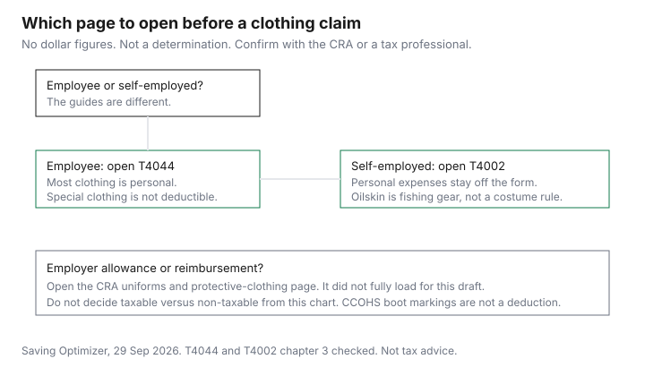

Clothing · Canada
Can You Write Off Work Clothes in Canada? What the CRA Allows (and What It Doesn't)
Social media often treats a work wardrobe as a write-off. Guide T4044, Employment Expenses, the 2025 edition on canada.ca, says the opposite for employees. You cannot deduct the cost of travel to and from work, or other expenses, such as most tools and clothing. Those costs are personal. A later line is narrower and just as plain: you cannot deduct the cost of special clothing you have to wear for your work. This page quotes that guide, checked 29 Sep 2026, and Guide T4002's chapter on expenses for the self-employed limit it does state. The CRA page on uniforms and protective clothing, which is the employer-side administrative policy, did not finish loading, so its conditions are not copied here. Open it before you treat an allowance as non-taxable. Education only. Not tax advice. Confirm with the CRA or a tax professional. The household credit map is the tax-credits guide. A clothing spending plan that does not depend on a deduction is the household clothing budget.
Key takeaways
- T4044 says employees cannot deduct most tools and clothing. It also says you cannot deduct special clothing you have to wear for your work. A tradesperson tool deduction in that guide is not a clothing deduction.
- If you do deduct employment expenses, T4044 says you complete Form T777, and your employer completes Form T2200. Clothing that the guide says you cannot deduct does not become deductible because a form exists.
- T4002 says you cannot deduct personal expenses. Enter only the business part on the business forms. The chapter opened here lists oilskin clothing as fishing gear on line 9136. It does not list ordinary clothes, costumes, or office uniforms as a line.
- The CRA uniforms and protective-clothing page for employers did not fully load on 29 Sep 2026. Do not treat a partial paraphrase as the non-taxable test. Open the page.
- CCOHS describes safety footwear and CSA Standard Z195-14 (R2023). That is a hazard standard, not a tax deduction for an employee who buys boots.
Employees: why everyday work clothes usually aren't deductible
T4044's opening note says you cannot deduct the cost of travel to and from work, or other expenses, such as most tools and clothing. These costs are considered personal expenses. The same guide, in the sections for employees who might claim supplies or other costs, repeats a special-clothing line. One wording is that you cannot deduct the cost of special clothing you have to wear for your work. Another wording in the same guide is that you cannot deduct the cost of special clothing you wear or have to wear for your work. Read the chapter that matches your job before you rely on either sentence alone. The point they share is that a clothing requirement from an employer is not, by itself, a deduction. A suit for the office, a black shirt for a restaurant, or steel-toe boots you buy because the site requires them are the kind of cost those sentences are about, until a section you open says otherwise. This page did not find a section that says otherwise for ordinary or special clothing.
The guide does say a tradesperson, including an apprentice mechanic, as described in its chapter 7, may be able to deduct the cost of eligible tools bought to earn employment income as a tradesperson. It says you cannot deduct the cost of tools that are considered equipment, in the same breath as the clothing sentence. Tools are not shirts. Do not put boots on a tool line because both are worn at work. If you are deducting employment expenses the guide allows, you complete Form T777, Statement of Employment Expenses, and include it with a paper return. Your employer has to complete Form T2200, Declaration of Conditions of Employment. More than one employer means more than one T2200. A form is not permission to deduct clothing the guide excluded. How to see your CRA mail and notices is CRA My Account.
Self-employed: uniforms, protective gear and costume-type clothing
T4044 points self-employed readers to Guide T4002, Self-employed Business, Professional, Commission, Farming, and Fishing Income. Chapter 3 of T4002, checked 29 Sep 2026, says you can deduct reasonable current expenses you incur to earn income, and that you cannot deduct personal expenses. You enter only the business part of expenses on Form T2125, Form T2042, or Form T2121. The chapter's list of lines includes advertising, meals, rent, supplies, and other expenses. It does not name a clothing line, a uniform line, or a costume line. A search of that chapter found the word clothing once: line 9136, fishing gear, which includes knives, small assorted supplies, gloves, and rubber or oilskin clothing used in your fishing business. That is a narrow fishing-gear sentence. It is not a rule that a consultant's blazer, a photographer's black clothes, or a stage costume is deductible.
Costume-type clothing is in the heading because people ask. The chapter that loaded does not answer it. Do not borrow an actor's rule from a forum. If your work needs an item you cannot wear off the job, the question for a tax professional is whether that item is a business expense under T4002 or a personal expense the guide says you cannot deduct. This page will not make that call. A self-employed health account is a different topic: health spending accounts. Not tax advice.
Safety boots and PPE: employer allowances and reimbursements
The Canadian Centre for Occupational Health and Safety page on safety footwear, checked 29 Sep 2026, is about injury, not about line 22900. If you are at risk for foot injury, you should wear appropriate protective footwear. Choose it for the hazard. The page refers to CSA Standard Z195-14 (R2023), Protective footwear, or other standards your jurisdiction requires, and it says to select CSA-certified footwear, or other certified footwear if your jurisdiction permits it, with the rating and sole the hazard needs. It describes a workplace program of selection, fit, training, maintenance, and inspection. Markings on the page include a green triangle for sole puncture protection with a Grade 1 protective toecap, a yellow triangle for Grade 2 with puncture protection, and rectangles for toe protection without puncture protection. Electric-shock, static-dissipative, conductive, metatarsal, and chainsaw markings are also described. Fit notes include about 12.5 mm of toe room and boots that fit at the heel when laced. That is how you choose a boot. It is not a deduction.
T4044 still says an employee cannot deduct special clothing they have to wear for work. If your employer pays for the boots, or pays you an allowance, the tax question is on the employer benefit page the CRA titles Uniforms, protective clothing, safety and special clothing. That page did not fully load on 29 Sep 2026, so this guide does not list the tests for a non-taxable allowance or reimbursement. Open it, and read T4130, Employers' Guide – Taxable Benefits and Allowances, if that is where your payroll team points you. A partial extract is not a rule you should file. CCOHS does not replace it.
Taxable vs non-taxable clothing allowances from employers
An allowance is an amount your employer pays you. A reimbursement is the employer paying a receipt. Whether either one is a taxable benefit is a payroll question with conditions this page did not retrieve in full. Do not assume that because the boots are required, the allowance is tax-free, and do not assume the reverse. The pattern on other employer payments is the same kind of reading. A transit subsidy can be a taxable benefit in some cases: employer transit subsidy. Workplace parking has its own CRA treatment: workplace parking. Those guides are not clothing rules. They are the reminder to read the benefit page that matches the payment. Until you have read the uniforms page, leave the taxable box on your worksheet as unconfirmed. Your T4 is the record of what the employer treated as taxable. If you disagree, the person to ask is the employer and then the CRA, not a shopping article.
Record-keeping if you do claim
If, after you read T4044, you are claiming an employment expense the guide allows, keep the records that guide names. Form T2200 from the employer. Form T777 with the amounts. Receipts for the expenses that are actually on the form. A clothing receipt for a suit the guide says you cannot deduct does not need a creative label. It needs to stay out of the claim. For a self-employed return, T4002 says only the business part goes on the form. Keep the invoice, and a note of why the expense is the business part, for anything a professional tells you belongs there. This page did not open a retention-period page, so it does not tell you a number of years. Follow the CRA's record-keeping instructions or your professional's. Not tax advice.
Cheaper ways to build a work wardrobe instead
A deduction you are not allowed is not a discount. The price you pay is the price. Build the wardrobe on condition and cost per wear, which does not require a tax theory. The Costco clothing checklist is category value, not a boot ranking. The thrift guide is for pieces that survive a close look. The garment-care guide is how washing and drying change how long a shirt lasts. None of those steps creates a deduction T4044 withholds. If an employer offers a real reimbursement, send the receipt the way payroll asks, and then read the benefit page before you decide the payment is tax-free.
| Situation | What the opened text says |
|---|---|
| Employee, ordinary work clothes | T4044: most clothing is a personal expense. You cannot deduct it. |
| Employee, special clothing you have to wear | T4044: you cannot deduct the cost of special clothing you have to wear for your work. A second sentence in the same guide says you cannot deduct special clothing you wear or have to wear. |
| Employee, tools | T4044: tools considered equipment are not deductible on that line. A tradesperson may deduct eligible tools under chapter 7. That is not clothing. |
| Self-employed, personal clothes | T4002: you cannot deduct personal expenses. Only the business part goes on T2125, T2042, or T2121. No general clothing line was in the chapter opened. |
| Self-employed, fishing gear | T4002 line 9136 includes rubber or oilskin clothing used in a fishing business, with other gear. Not a costume rule. |
| Employer allowance or reimbursement | Not quoted. The CRA uniforms and protective-clothing page did not fully load. Open it, and T4130 if payroll uses it, before you call a payment non-taxable. |
| Record | Why it is on the list |
|---|---|
| The CRA guide chapter for your job | T4044 for employees. T4002 for self-employed. Quote the line you are using, not a social post. |
| Form T2200 | T4044: your employer completes it if you deduct employment expenses. One form per employer. |
| Form T777 | T4044: calculate allowable employment expenses on T777 and include it with a paper return. |
| Receipts for amounts on the form | Only for expenses the guide allows. A excluded clothing receipt stays out of the claim. |
| Business-use note, if self-employed | T4002: enter only the business part. Write why the invoice is that part. Ask a professional before you include clothing. |
| Employer benefit page, if you were paid an allowance | Open the uniforms page that did not load here. Do not file from this article's silence. |

Sources & date stamps
- Canada Revenue Agency, Guide T4044, Employment Expenses 2025, canada.ca, checked 29 Sep 2026. Most tools and clothing are personal. Special clothing you have to wear is not deductible. Form T777 and Form T2200. Tradesperson eligible tools are a separate chapter, not clothing.
- Canada Revenue Agency, Guide T4002, chapter 3, expenses, checked 29 Sep 2026. Personal expenses are not deductible. Only the business part goes on the business forms. Line 9136 fishing gear includes rubber or oilskin clothing. No costume or everyday-uniform line was in that chapter.
- Canadian Centre for Occupational Health and Safety, safety footwear, ccohs.ca, checked 29 Sep 2026. CSA Standard Z195-14 (R2023). Selection, fit, and markings. Not a tax rule.
- The CRA page Uniforms, protective clothing, safety and special clothing did not fully load on 29 Sep 2026. Its non-taxable conditions are not quoted. T4130 was not opened as a full guide. No dollar threshold and no retention period are stated. Not tax advice.
Frequently asked questions
Can employees deduct work clothes in Canada?
Guide T4044 says you cannot deduct most tools and clothing, and that those costs are personal. It also says you cannot deduct special clothing you have to wear for your work. A requirement to dress a certain way does not, on that text, create the deduction. Form T777 and Form T2200 are for employment expenses the guide allows, not a way to add clothing the guide excludes. Confirm with the CRA or a tax professional. Not tax advice.
Can self-employed people deduct clothing?
Guide T4002 says you cannot deduct personal expenses and that only the business part of an expense goes on the business form. The expense chapter opened on 29 Sep 2026 does not list ordinary clothes, uniforms, or costumes. It does mention rubber or oilskin clothing as fishing gear on line 9136. That is not a general clothing deduction. Ask a tax professional before you claim a wardrobe item. Not tax advice.
Are safety boots tax-deductible?
For an employee, T4044 says you cannot deduct special clothing you have to wear for your work. CCOHS describes how to choose protective footwear, including CSA Standard Z195-14 (R2023). That is a safety standard, not a line on the return. If an employer pays for the boots or pays an allowance, the tax treatment is on the CRA uniforms page, which did not fully load for this draft. Open that page before you decide. Not tax advice.
Is a clothing allowance from my employer taxable?
This page does not answer yes or no, because the CRA page that states the administrative policy did not fully load on 29 Sep 2026. An allowance can be taxable, and some protective-clothing payments are treated differently when conditions are met. Those conditions are not copied here. Read the uniforms page, and T4130 if your employer uses it, or ask payroll and the CRA. Not tax advice.
What records should I keep?
If you claim an employment expense T4044 allows, keep Form T2200 from your employer, Form T777, and the receipts for the amounts on the form. Do not put excluded clothing on T777 because you kept the receipt. If you are self-employed, T4002 says to enter only the business part, so keep the invoice and a note of why it is that part. This page did not open a retention period, so it does not state one. Not tax advice.